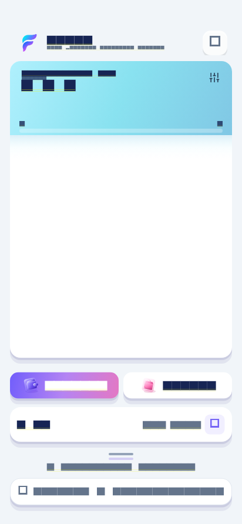
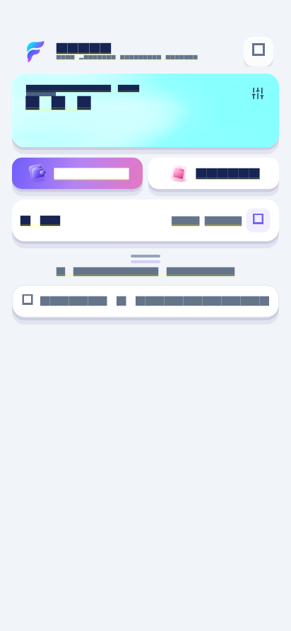
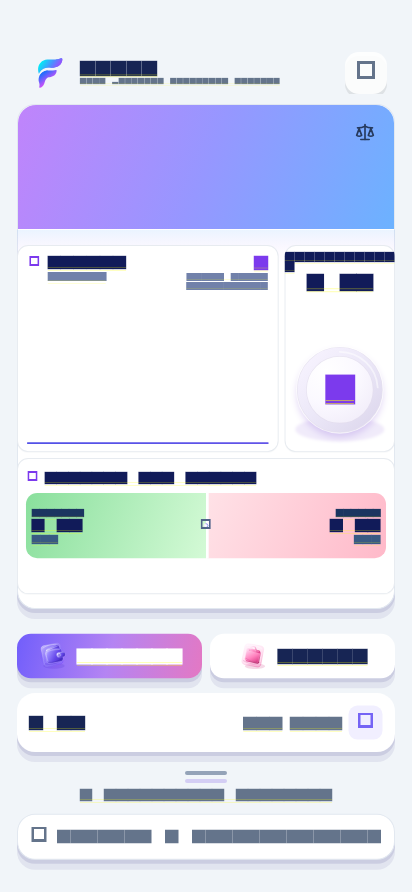
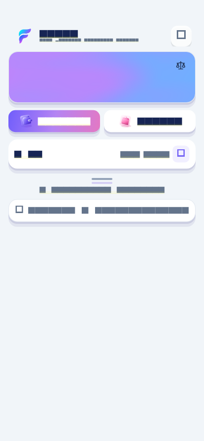
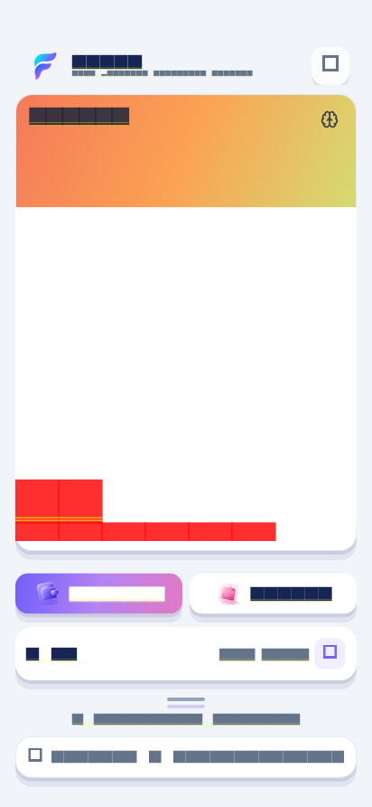
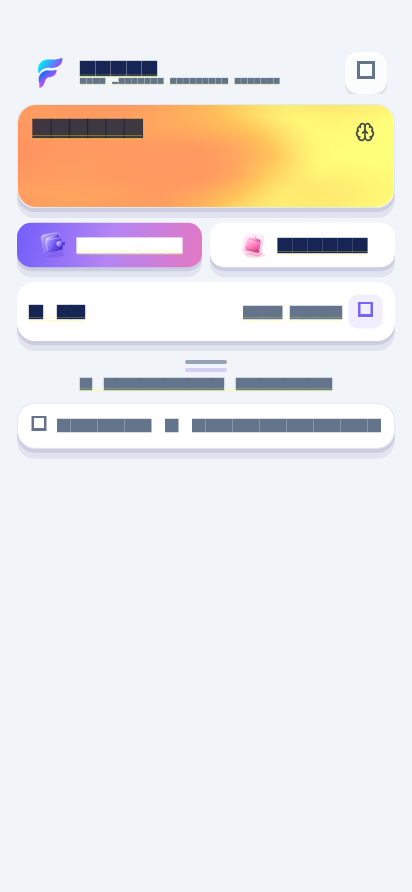

Budget Mother Card — folyamatos fizikai szétválás
Javítási terv és renderelési szerkezet
- Az expanded geometria és az első 0 / 0,1 / 0,5 / 1 / 3 / 9 frame téglalapjainak rögzítése.
- Tiszta Budget-resolver: a közös master progressből számolt kanonikus kapcsolódási pont, cascade cél-téglalap, folyamatos alsó él, insetek és skála.
- Végig azonos dekorációs fa: átlátszó kapcsolt körvonal/árnyék, mozgó fehér test és testhez vágott színes bridge. A PageView és az avatar carousel külön, változatlan cascade gyermek marad.
- A Header és a test belső sarkai, önálló árnyékai és keretei ugyanebből a progressből jelennek meg. Nincs második animációvezérlő.
- Végpont- és folytonossági tesztek, valódi visszafordítás, PageView/ScrollPosition identitás és köztes golden képek. Split, Balance, Mind regresszió.
- Commit, push, azonos SHA-jú normál human APK online build és ellenőrzött letöltés.
Tényleges Flutter képkockák


Regressziós bizonyíték
A módosítatlan 9cace8bd kiinduló kódból és a javított kódból frissen renderelt hat teljes Dashboard-végpont képpontonként azonos. A történeti tesztek 16 hibája a kiinduló kódban is reprodukálható; azok goldenjeit nem írtuk felül. Mérési adatok és RGBA-hash-ek.





